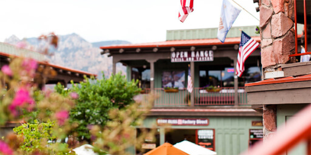
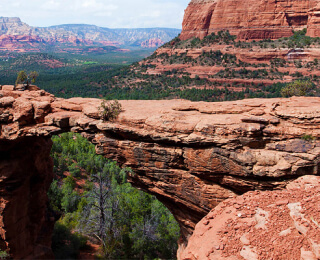

Добро пожаловать в Седону

Преимущества Седоны
седона — небольшой городок в аризоне, заслуживающий большего!
Рассмотрим 5 причин, по которым Седона круче, чем гранд каньон!
настоящий
№1
городокседона не аттракцион для туристов, там течет своя жизнь
 жилье
Рекомендуем пожить в настоящем мотеле, все как в кино!
сувениры
Не только китайского, но и местного производства!
еда
Всегда заказывайте фирменный бургер, Вы не разочаруетесь!
там есть
№2
Мост дьяволаДа, по нему можно пройти! Если вы осмелитесь, конечно
 небольшая
№3
площадьвсе интересные места находятся очень близко
Красивая
№4
дорогаехать в Седону из Лас-Вегаса совсем совсем не скучно
Мало
№5
туристовБольшинство едет в гранд каньон и толпится там
Поиск гостинниц в Седоне
Заинтересовались?
Укажите предполагаемые даты поездки,
и мы покажем вам лучшие предложения гостиниц в седоне